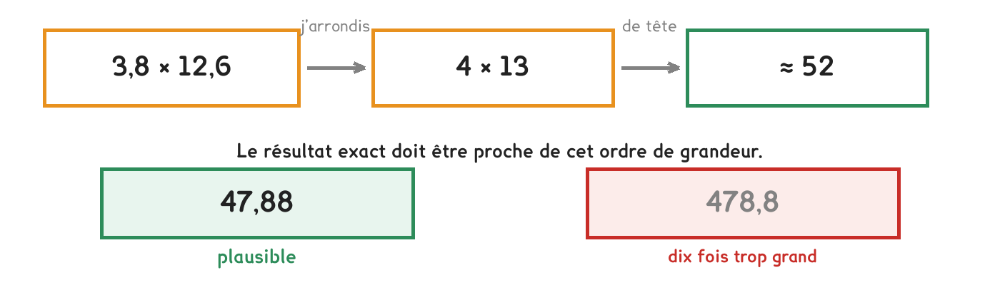

CAP · consolidation maths
La calculatrice ne se trompe jamais. C'est nous qui tapons de travers, et le seul moyen de s'en apercevoir, c'est d'avoir estimé avant.
4 questions · 6 exercices · 18 items d'entraînement · 1 repli · 1 figure
Savoirs travaillés

L’estimation se fait avant, jamais après. Une fois le résultat affiché, on le croit : c’est ainsi qu’un devis dix fois trop cher se signe sans que personne ne bronche.
| Le calcul | J’arrondis | À peu près | Le résultat annoncé |
|---|---|---|---|
| 3,8 × 12,6 | 4 × 13 | ≈ 52 | 47,88 : plausible |
| 197 × 4,9 | 200 × 5 | ≈ 1 000 | 96,53 : dix fois trop petit |
| 0,42 × 60 | 0,4 × 60 | ≈ 24 | 25,2 : plausible |
| 1 250 ÷ 5,1 | 1 250 ÷ 5 | ≈ 250 | 2 450 : dix fois trop grand |
On arrondit trop finement. Estimer 197 × 4,9 par 197 × 5 ne sert à rien : c’est presque aussi long que le calcul exact. Un seul chiffre par nombre (200 × 5) et le calcul se fait de tête en une seconde. L’estimation doit être grossière pour être utile.
Pour aller plus loin
Il attrape les erreurs de facteur dix : une virgule mal placée, un zéro de trop, une unité oubliée. Ce sont de très loin les erreurs les plus fréquentes et les plus coûteuses.
Il ne voit rien d’une erreur de quelques pour cent : si vous tapez 3,8 × 12,4 au lieu de 3,8 × 12,6, l’estimation dit 52 dans les deux cas. Pour ça, il n’y a que la relecture.
C’est pourquoi on le pratique systématiquement et non quand on doute : il ne coûte qu’une seconde, et il écarte la seule famille d’erreurs qui ruine un devis.
Les mêmes séries que sur la feuille. On remplit chaque case, puis on vérifie la série entière d’un coup.
Série · CN
Série · CN
Série · CN
Série · CN
Trois résultats sortis de la calculatrice sur le même chantier. Deux sont faux.
Exercice · AU
Une tranchée de 24 m de long sur 0,60 m de large. La calculatrice affiche 14,4 m². Quelle surface trouvez-vous ?
Exercice · AU
Huit sacs de ciment de 35 kg. La calculatrice affiche 2 800 kg. Quelle masse trouvez-vous ?
Exercice · AU
145 m de câble à 2,10 € le mètre. La calculatrice affiche 30,45 €. Quel prix trouvez-vous ?
Exercice · AU
Pour chacun des deux résultats faux, dites s’il est dix fois trop grand ou dix fois trop petit, et donnez l’estimation qui permettait de s’en apercevoir.
Un devis entier à estimer, puis à vérifier. L’écart n’est pas un facteur dix, et c’est justement ce qui rend la question difficile.
Exercice · AU
Un devis annonce 1 850 € pour : 145 m de câble à 2,10 €/m, 8 sacs de ciment à 12 €, et 3 h de main-d’œuvre à 45 €/h. Quel total trouvez-vous ?
Exercice · AU
Le devis est environ 3,5 fois trop cher, pas dix fois. Expliquez pourquoi l’ordre de grandeur seul n’aurait pas suffi à le refuser, et dites ce qu’il a quand même permis de voir.
Fiche de consolidation. Aucun corrigé ; rien n'est enregistré, rien n'est noté.